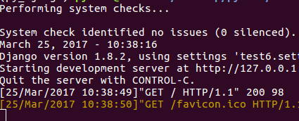
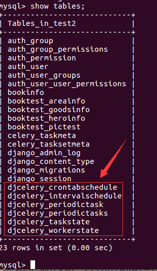
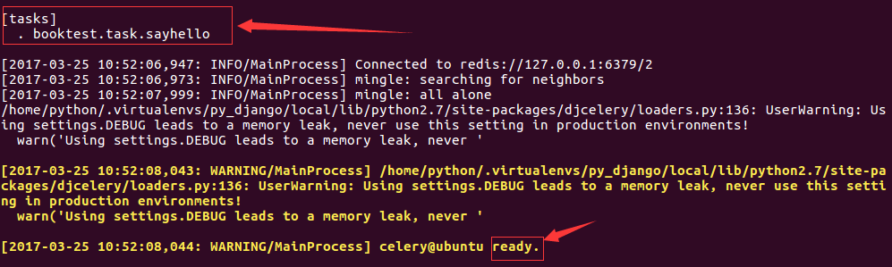
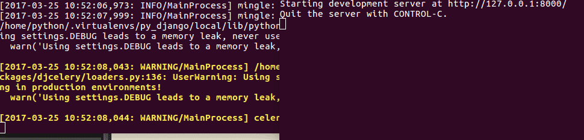
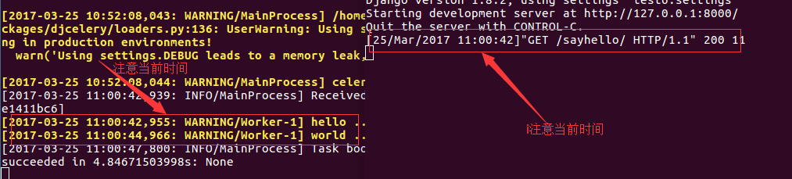

celery
情景：用户发起request，并等待response返回。在本些views中，可能需要执行一段耗时的程序，那么用户就会等待很长时间，造成不好的用户体验，比如发送邮件、手机验证码等。
使用celery后，情况就不一样了。解决：将耗时的程序放到celery中执行。
- 点击查看celery官方网站
- 点击查看celery中文文档
celery名词：
- 任务task：就是一个Python函数。
- 队列queue：将需要执行的任务加入到队列中。
- 工人worker：在一个新进程中，负责执行队列中的任务。
- 代理人broker：负责调度，在布置环境中使用redis。
安装包：
celery==3.1.25
django-celery==3.1.17
示例
1）在booktest/views.py文件中创建视图sayhello。
import time
...
def sayhello(request):
print('hello ...')
time.sleep(2)
print('world ...')
return HttpResponse("hello world")
2）在booktest/urls.py中配置。
url(r'^sayhello$',views.sayhello),
3）启动服务器，在浏览器中输入如下网址：
http://127.0.0.1:8000/sayhello/
4）在终端中效果如下图，两次输出之间等待一段时间才会返回结果。

5）在test6/settings.py中安装。
INSTALLED_APPS = (
...
'djcelery',
}
6）在test6/settings.py文件中配置代理和任务模块。
import djcelery
djcelery.setup_loader()
BROKER_URL = 'redis://127.0.0.1:6379/2'
7）在booktest/目录下创建tasks.py文件。
import time
from celery import task
@task
def sayhello():
print('hello ...')
time.sleep(2)
print('world ...')
8）打开booktest/views.py文件，修改sayhello视图如下：
from booktest import tasks
...
def sayhello(request):
# print('hello ...')
# time.sleep(2)
# print('world ...')
tasks.sayhello.delay()
return HttpResponse("hello world")
9）执行迁移生成celery需要的数据表。
python manage.py migrate
生成表如下：

10）启动Redis，如果已经启动则不需要启动。
sudo service redis start
11）启动worker。
python manage.py celery worker --loglevel=info
启动成功后提示如下图：

11）打开新终端，进入虚拟环境，启动服务器，刷新浏览器。 在旧终端中两个输出间仍有时间间隔。

运行完成后如下图，注意两个终端中的时间，服务器的响应是立即返回的。

12）打开booktest/task.py文件，修改为发送邮件的代码，就可以实现无阻塞发送邮件。
from django.conf import settings
from django.core.mail import send_mail
from celery import task
@task
def sayhello():
msg='<a href="http://www.itcast.cn/subject/pythonzly/index.shtml" target="_blank">点击激活</a>'
send_mail('注册激活','',settings.EMAIL_FROM,
['itcast88@163.com'],
html_message=msg)